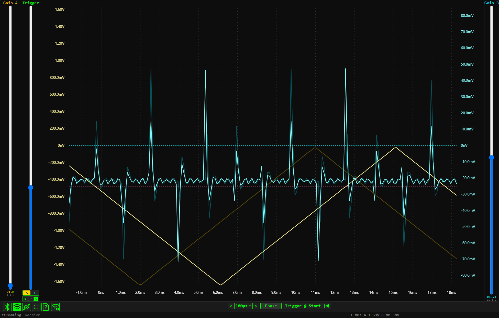

Drag up/down here to adjust Channel A Gain. This scales the voltage range for the yellow trace.
Drag up/down to set the Trigger Level. It determines when the waveform is captured.
Select Trigger Source (A or B) and Edge type (None, Rising, Falling).
Draw a box anywhere to measure Δt and ΔV with cursors
Drag X-axis (time axis) left or right to adjust trigger time.
Drag Y-axis (left scale) up/down to adjust Channel A offset.
Drag Y-axis (right scale) up/down to adjust Channel B offset.
Drag up/down here to adjust Channel B Gain. This scales the cyan trace.
Connection modes:
BLE, WiFi, or Serial (USB).
Here you can select the Timebase (sampling period) and pause the live trace.